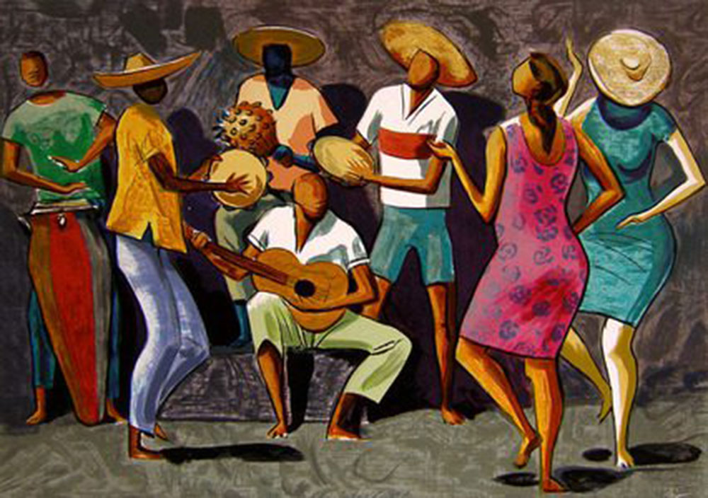

A música brasileira é um tesouro cultural que reflete a rica diversidade do país ao longo de sua história. Desde as raízes indígenas até as influências africanas e europeias, a música brasileira é um caleidoscópio de ritmos, estilos e expressões
1. Época Colonial (1500-1822): A Música nas Plantações
Com a chegada dos colonizadores portugueses em 1500, a música indígena foi influenciada pelos sons europeus trazidos pelas missões religiosas. Surgiram as primeiras formas de música sacra e folclórica, marcando o início de uma fusão musical única.
2. Período Imperial (1822-1889): O Surgimento do Choro e da Modinha
Com a independência em 1822, a corte trouxe consigo influências europeias mais refinadas. O choro, gênero instrumental de grande destaque, e a modinha, canção romântica, ganharam popularidade nesse período.
3. República Velha (1889-1930): A Era do Carnaval e do Samba
O final do século XIX e início do século XX viram o surgimento do samba, uma mistura de influências africanas e caribenhas. O Carnaval, que já existia, ganhou impulso, tornando-se uma festa nacional e contribuindo para a disseminação do samba como símbolo da identidade brasileira.
4. Era Vargas (1930-1945): A Era do Rádio e da Música Popular Brasileira (MPB)
O rádio se tornou um meio poderoso de disseminação musical durante o governo de Getúlio Vargas. A Música Popular Brasileira (MPB) emergiu como um movimento que combinava influências regionais e internacionais, destacando artistas como Ary Barroso e Carmen Miranda.
5. Anos Dourados (1950-1960): Bossa Nova e Tropicália
A Bossa Nova, com suas batidas suaves e harmonias complexas, conquistou o mundo nos anos 1950, com ícones como João Gilberto e Antônio Carlos Jobim. Nos anos 1960, a Tropicália surgiu como um movimento ousado, misturando tradição e experimentação, com nomes como Caetano Veloso e Gilberto Gil.
6. Ditadura Militar (1964-1985): Resistência e Canção de Protesto
Durante os anos de ditadura, a música tornou-se uma forma de resistência. Artistas como Chico Buarque e Elis Regina usaram suas músicas para transmitir mensagens de resistência e protesto contra o regime autoritário.
7. Anos 80 e 90: Diversificação e Globalização
Nas décadas seguintes, a música brasileira continuou a evoluir, incorporando elementos do rock, pop e eletrônico. Artistas como Legião Urbana e Marisa Monte representaram essa diversificação, enquanto o fenômeno da Lambada e a ascensão do Axé Music também marcaram o cenário musical.
8. Século XXI: O Novo Milênio e a Continuidade da Diversidade
No século XXI, a música brasileira continua a se reinventar, mesclando tradição e modernidade. O funk carioca, o sertanejo universitário e o rap brasileiro ganharam destaque, refletindo a pluralidade cultural e musical do Brasil no cenário global.
Esta breve viagem pela história da música brasileira destaca a incrível riqueza e evolução desse fenômeno cultural, que continua a encantar e inspirar pessoas em todo o mundo.
